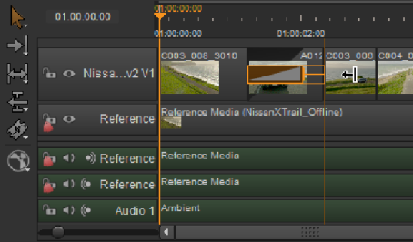
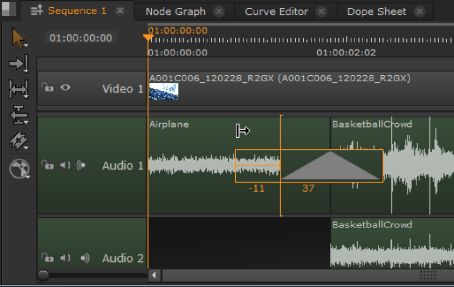

Nuke Studio supports basic video and audio fade transitions as well as dissolves between clip instances on the same track. Transitions come in three flavors:
• Fade in - fades in from black on a single clip instance.
• Fade out - fades out to black on a single clip instance.
• Dissolve - fades out from one clip instance and into the next, by merging frames.
TIP: Once a transition is in place, it can be nudged in the same way as an edit using the , (comma) and . (period) keyboard shortcuts, providing the required handles exist.
To add a fade transition:
| 1. | Right-click the target clip instance and select Editorial > Add Transition > Fade In, Fade Out, Audio Fade In or Audio Fade Out to add the fade icon. |
| 2. | Adjust the fade by dragging the fade icon using the Multi Tool or Move/Trim tool. |

To add a dissolve transition:
NOTE: You can only add dissolves between clip instances when they're on the same track and have sufficient handles available on both sides of the transition.
| 1. | Select the Multi Tool or Roll Edit tool and hover the mouse pointer over an edit between two clip instances. |
TIP: Clicking and holding the edit point displays available handles as a red overlay.
| 2. | Right-click and select Editorial > Add Transition > Dissolve or Audio Crossfade, or use the Ctrl/Cmd+T keyboard shortcuts, to add the dissolve icon to the edit. |
| 3. | Adjust either side of the dissolve by dragging the icon, in a similar way to using the Multi Tool or Move/Trim tool. |

|
|